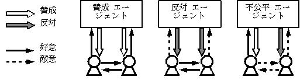
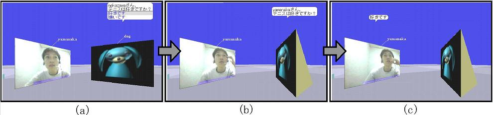

この研究は，近未来に生まれるだろうエージェントと人間が共存するデジタルシティにおいて，エージェントが人間関係にどのような心理的影響を与えうるかを調べたものである．社会心理学の理論であるハイダーのバランス理論（balance theory）によると，ある共通の対象に対して，自分と相手の心情が同じであると思っている人間は相手に肯定的印象を持つ．反対に，異なると思っている人間は相手に否定的印象を持つ．エージェントへの印象の不一致が，この理論が示すように他者への否定的印象を誘引するのかどうか確かめる実験を行った．これは次のような2段階の影響を確認することである．1段階目は，エージェントへの印象の不一致を，人間エージェント間のインタラクションを通して人工的に生じさせうることの確認である．実験ではエージェントが被験者の好意を招くために質問をしてその返答に賛成することを繰り返した．敵意を招きたい場合は，質問をしてその返答に反対することを繰り返した．2段階目は，人工的に生じた不一致が人間関係に否定的な影響を及ぼすことの確認である．以上をまとめると，バランス理論における3つの均衡状態（図１参照）を人工的に生じさせうることの確認となる．

図１．バランス理論にもとづく３つの均衡状態
人間エージェント間インタラクションだけでなく，人間同士のインタラクションも人間関係に影響しうる．これらの力関係を見るために次の2つの操作を追加した．一つ目はエージェントによる会話の発言権制御である．発言権を制御する者の影響力は大きくなることが知られている．そこで，制御を行う条件においては被験者同士の音声通信を切断し，映像通信及びエージェントとのやり取りだけを可能とした．二つ目は会話の分割である．人間には相手の面目を保とうとする傾向があることが知られている．おおっぴらにエージェントが被験者の一人に賛成してもう一人に反対すれば，両者から反発を招くかもしれない．そこで，分割を行う条件においては，各被験者とエージェントによる会話と被験者同士の会話とを別々に行うこととした．図２は分割を行わない条件である．
まとめると次のようになる．エージェントの振舞いの違い（Agent），発言権制御の有無（Control），会話を分割するかどうか（Mediate），の3つが独立変数である．2x2x2の8条件を分散分析にかけるために，条件ごとに20人分のデータを得た．エージェントの印象，相手が抱いたと推測するエージェントの印象，相手の印象，の3つの従属変数において，類似と魅力の2つの指標をアンケートで測定した．仮説は以下の5つである．
- H1 賛成するエージェントには好意を抱き，反対するエージェントには敵意を抱く．
- H2 相手もH1と同様に反応すると推測する．
- H3 自分と相手の反応が同じと推測する場合は相手に好意を，逆の場合は敵意を抱く．
- H4 発言権を制御するほうが，H1からH3の影響が強く出る．
- H5 会話を分割するほうが，H1からH3の影響が強く出る．
分析結果は全仮説を支持するものであった．Agentの主効果について，全指標において有意差が見られた．これはH1からH3を支持する結果である．さらに，残り2要因との交互作用（Agent*Control，Agent*Mediate）にも有意差が見られた．これはH4とH5を支持する結果である．Controlとの交互作用は，人間同士のインタラクションが持つ影響を示している．被験者同士が音声会話を自由に行えた場合，エージェントへの印象の不一致は，他者への否定的印象を誘引しなかった（類似：F(1,72)=5.6, p<.05 魅力：F(1,72)=11.4,p<.01）．また，Mediateとの交互作用は，人間エージェント間インタラクションが人々に共有されることによる影響を示している．一人に賛成してもう一人に反対する不公平なエージェントの振舞いが暴露された場合，賛成された被験者でさえエージェントに敵意を抱いた（類似：F(1,72)=4.0, p<.05 魅力：F(1,72)=7.2, p<.01）．この実験によって，バランス理論に従った影響を与えるほどの社会的存在感をエージェントが持ちうるということが分かった．

図２．会話を分割しない条件のインタラクション．
(a) エージェントの質問に答える．
(b) エージェントが相手に質問する．
(c) 相手がエージェントの質問に答える．
文献：
Hideyuki Nakanishi, Satoshi Nakazawa, Toru Ishida, Katsuya Takanashi and Katherine Isbister. Can Software Agents Influence Human Relations? - Balance Theory in Agent-mediated Communities -. International Joint Conference on Autonomous Agents and Multiagent Systems (AAMAS2003), pp. 717-724, 2003.
連絡先：
京都大学 社会情報学専攻 中西英之 nakanishi at i.kyoto-u.ac.jp